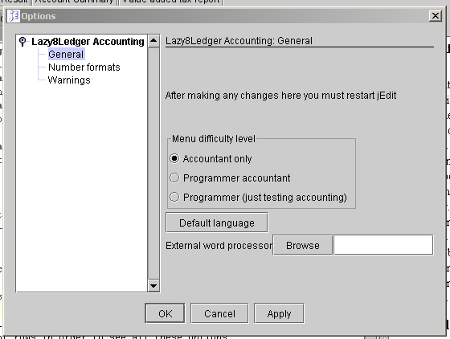

|
|
To come to the options screen, you must choose the menu Utilities->options

Here is where you do all the major setup of the system. In the column on the left you must select the different rows in order to see all these options.General
Menu difficulty level
Choose what sort of user you are? This information is used to decide how much to change the jEdit environment. If you choose 'Accounting only' then the jEdit environment will be changed to only allow accounting. It is very important that you choose this if you only want to do accounting and you are not a programmer. If you choose 'Programmer accountant' then the jEdit environment will be changed to enhance accounting, but you may still use jEdit for programming. If you choose 'Programmer', then the JEdit environment will not be changed at all.
Default language
Hit this button to change what language you want to be shown in all the windows. You must shut down this program before any changes will take place.External word processor
The word processor internal to this program is very limited yet used constantly. You may choose here to use your own word processor instead of the internal word processor. Simply write in the full path of your word processing program or use the BROWSE button to find the program. Your personal word processor must be able to use Rich Text Format (RTF), most do anyway. The following are examples of programs and paths to well known word processors
Operating system
Program
Path
Windows
Write or Wordpad
Write
Windows
Microsoft word
C:\program files\microsoft office\office\winword
Browse
Hitting this button will put up a dialog to assist you in finding your word processor.Number formats
Report Number Formats
Report Left justify
Left justify the numbers in a field or columnReport Right justify
Right justify the numbers in a field or columnReport - OS System standard number
This format is very good however, it lacks control over the decimal point. That is, if you have decimals, then the decimal points will not line up. If you have decimals then better alternative is to choose one of the special formats to get a good line up of the decimal points.Report - OS System standard currency
This is what either your operating system has predefined for you as the standard currency format or what the java system has decided is the default for your operating systems defined country and language. This format always has excellent control over the decimal points. However, this number format always includes the currency sign with each number. This is usually too much so this format is not very interesting.Report - Special format
If you select this special format, then you must give what format you want in the following text boxReport - Special format text entry
It is highly suggested that you choose one of the predefined formats because this formatting is very specific and easy to do wrong. However, if you want more information on how to make your own formats, see number formats.Input Number Formats
Input - Left justify
Left justify the numbers in a field or columnInput - Right justify
Right justify the numbers in a field or columnInput - OS System standard number
This format is very good however, it lacks control over the decimal point. That is, if you have decimals, then the decimal points will not line up. This is normally not a problem for number inputting. So if you can stand that the decimal points dont line up then I highly suggest this format. Otherwise, then better alternative is to choose one of the special formats to get a good line up of the decimal points.Input - Special format
If you select this special format, then you must give what format you want in the following text boxInput - Special format text entry
It is highly suggested that you choose one of the predefined formats because this formatting is very specific and easy to do wrong. Even some of the predefined formats will stop you from inputing numbers. For instance, dont use any formats that require a currency sign. However, if you want more information on how to make your own formats, see number formats.Warnings
Allow changes to transactions
This may not be changed after the first time you start this program. Do you want to be able to change transactions entered into the database? The laws in most countries do not allow changes for proffesional accounting. The lawful solution is to enter another transaction to correct the wrong transaction. However, such strict rules are unnecessary for a non-proffesional use of this program. If you are not sure, I suggest you choose to allow changes to the database.Require password at start
This may not be changed after the first time you start this program. If this is selected then each time you start this program you will be required to put in a username and a password. Then, if you forget the password, you will not be able to see your data.Confirm after a record is added
You will get a message after each record is added. This so you can be sure your record was entered into the database.Confirm before deleting a record
You will get a question 'Are you sure you want to delete.....' each time you try to delete a record.Tab stop on customer during input
In the transaction data input window, there is a customer field that the cursor will stop at each time you fill in a record. This is unnecessary for most people however, if you are required to enter a customer for each transaction then this should be selected.Confirm after deleting a record
You will get a message after each record is deleted. This so you can be sure your record was deleted from the database.Clear screen after adding a record
This is normally the best way to work. If you often enter records that are very nearly identical, then perhaps you want to unselect this so that with minimal changes you can reenter the record as a new record.Clear screen after deleting a record
This is normally the best way to work. However, if you want to see the record you have just deleted, then unselect this option.Show context help
You should have this selected in the beginning so that you can get help for every field your mouse passes over. The help will show up in a 'InfoViewer' on the right hand side of your screen. After you have learned this program, you dont need this anymore and can unselect it.Warn to backup data if changes made
This will warn you every time you exit this program that you should do a backup of your database. See Database Backups and restoring for more information.Require encrypted backup files
If this is selected then your database backups will be encrypted. That means you will need to enter a password each time you do a backup and that password must be used again each time you restore the database. This is for those whose work requires secrecy or confidentiality and this is especially useful if you will be transfering your backup over the internet. For an explanation on what type of encryption is used, see below:
PBEWithMD5AndDES: The password-based encryption algorithm as defined in: RSA Laboratories, "PKCS #5: Password-Based Encryption Standard," version 1.5, Nov 1993. Note that this algorithm implies CBC as the cipher mode and PKCS5Padding as the padding scheme and cannot be used with any other cipher modes or padding schemes.Allow company changes in all windows
If this box is checked then all windows which have a company selection box will not be disabled. Otherwise all other occurances of the company in other windows will be disabled and only the Default company chosen when you started this program will be allowed.OK button
Hit this button to accept all the changes you have made.Apply
The same thing as OK except the screen does not disappear.Cancel button
Hit this button to cancel all the changes you made.
|
|
Copyright 2002 Lazy Eight Data HB